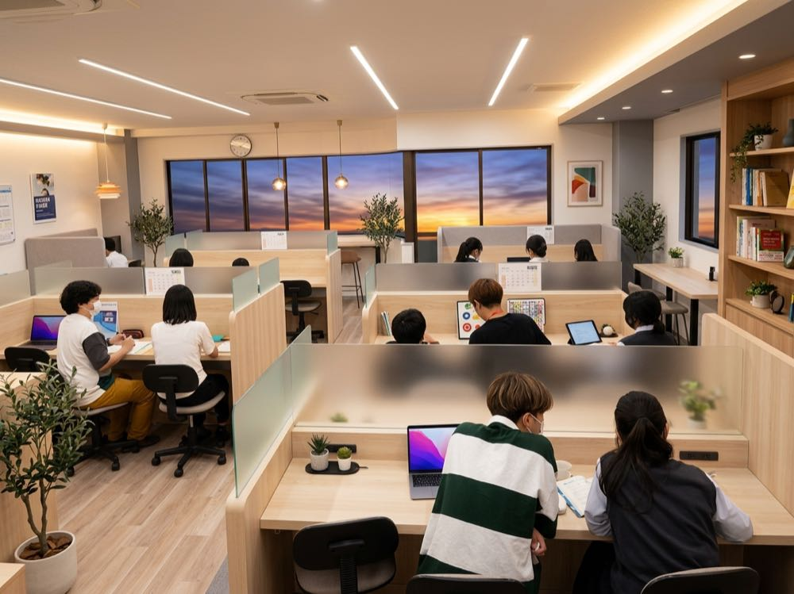

Flow
入塾までの4ステップ
1
お問い合わせ
フォーム・LINE・お電話のどれでも。24時間以内にご返信し、面談の日程を決めます。
2
学力診断＋面談
教科ごとの理解度を診断し、教室長が「どこから・何を・いつまでに」の計画案を作ります。保護者の方だけの相談も可能です。
3
無料体験（2回）
実際の授業と同じ形式で2回受けられます。担当予定の講師が受け持ち、体験後にフィードバックをお渡しします。
4
ご入塾の判断
ご家庭でゆっくりご検討ください。合わないと感じたら、遠慮なくお断りください。
学校に行けていない
お子さまの学習も支えます
桜台ゼミナールは、不登校・行きしぶりのお子さまの学習サポートを行っています。学校の授業に出られていない期間があっても、学力診断で抜けている単元を特定し、その子のペースで戻り学習から始めます。
- 人の少ない夕方前の時間帯（15:30〜17:00）をご案内できます
- 在籍校の出席扱い制度（学習記録の提出）のご相談も可能です
- まずは保護者の方だけのご相談でも構いません

FAQ
よくある質問
入塾前によくいただく質問に、結論から答えています。ここにない疑問は、お電話やLINEでお気軽にどうぞ。
個別指導と少人数指導は、どう使い分けるのですか？
苦手教科は講師1人に生徒2人までの個別指導で、つまずきの根本から立て直します。得意教科や演習量を増やしたい教科は最大6名の少人数指導で鍛えます。組み合わせは学力診断の結果をもとに教室長がご提案し、途中で変更もできます。
料金はいくらですか？
月謝（税込）は小学生8,800円〜、中学生15,400円〜、高校生19,800円〜です。入塾金11,000円、教材費は実費（年間6,000〜10,000円程度）で、設備費・管理費はいただきません。夏期講習の目安は小学生16,500円〜、中1・2で24,200円〜、中3で41,800円〜です。
成績が低くても入塾できますか？
はい、入塾テストで選抜はしません。当塾の塾生の多くは「平均点に届かない」状態からのスタートです。最初の学力診断はあくまで計画づくりのためのもので、必要であれば前の学年まで戻って学習計画を作ります。
体験授業はありますか？
はい、無料で2回まで受けられます。担当予定の講師が実際の授業と同じ形式で行い、体験後にお子さまの学習状況のフィードバックをお渡しします。体験後に入塾しなくても構いません。無理な勧誘は一切いたしません。
どこの学校の生徒が通っていますか？
藤が丘中学校・桜台中学校の生徒が中心で、小学生は藤が丘小・桜台小、高校生は岐阜高校・加納高校・長良高校などの生徒が通っています。両中学校の定期テストの出題傾向と提出物のスケジュールを把握したうえで、テスト3週間前から対策に切り替えます。
不登校で学校に行けていないのですが、通えますか？
はい、通っていただけます。学力診断で抜けている単元を特定し、その子のペースで戻り学習から始めます。人の少ない夕方前の時間帯（15:30〜17:00）のご案内や、在籍校の出席扱い制度（学習記録の提出）のご相談も可能です。
どんな先生が教えてくれますか？
教室長と、教室長の研修を修了した講師が担当します。担当講師は固定制で、体験授業の様子を見て相性まで考えて決めます。合わないと感じた場合は理由を聞かずに交代しますので、遠慮なくお申し出ください。
振替はできますか？
個別指導は前日までのご連絡で、同月内に無料で振替できます。少人数指導は曜日固定のため振替はありませんが、欠席回の内容はプリントと動画で補習します。
宿題はどのくらい出ますか？
「一人でも確実にできる量」に絞って出し、次の授業で必ず確認します。学校の宿題や提出物が多い週は、面談なしでも調整しますので、お子さまから担当講師に伝えてもらえれば大丈夫です。
保護者への報告はありますか？
毎月、学習内容と現在の課題をまとめた報告をLINEでお送りします。また、学期ごと（年3回）の保護者面談で、成績の推移と次の学期の計画をご説明します。
月謝の支払い方法を教えてください。
口座振替（毎月27日引き落とし）です。初月のみ、現金またはお振込をお願いしています。
退塾したいときは、どうすればいいですか？
前月の15日までにお申し出いただければ、当月末で退塾できます。年間契約の縛りや違約金はありません。ご家庭の事情による休塾（月単位）も可能です。
まずは、無料体験と学習相談から。
体験を受けて入塾しなくても構いません。今のつまずきと道筋をお伝えするだけでも価値があると考えています。
058-000-0000受付 15:00–22:00（日祝休）／授業中は出られない場合があります。当日中に折り返します。